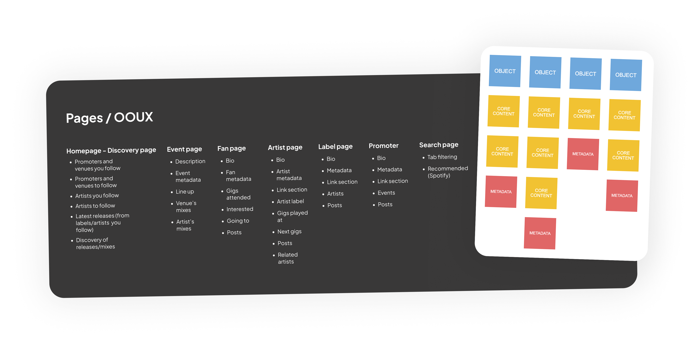
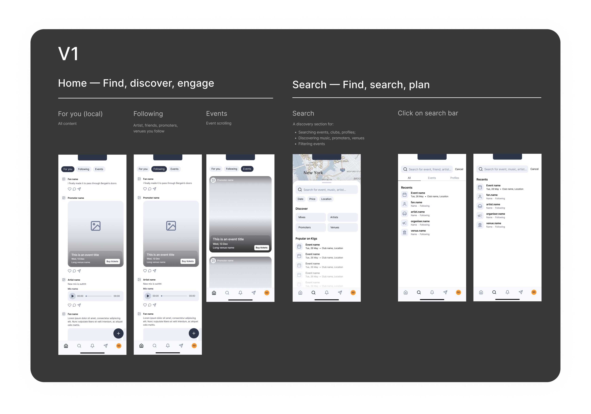
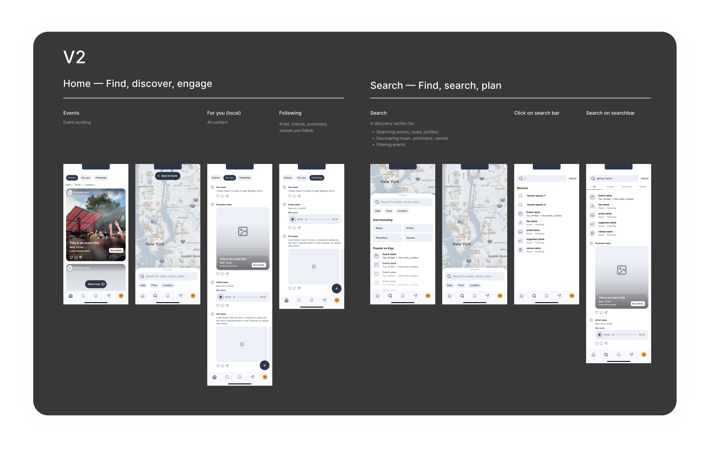
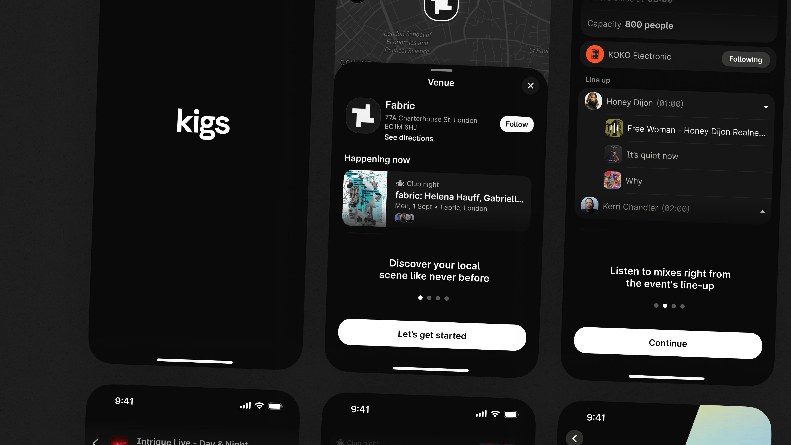
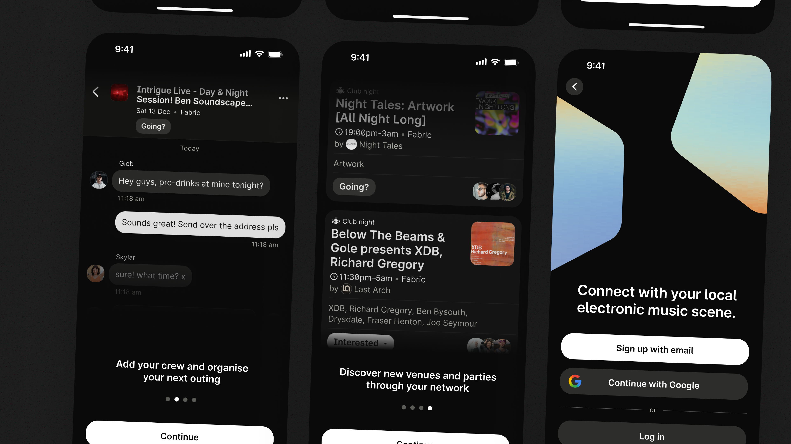
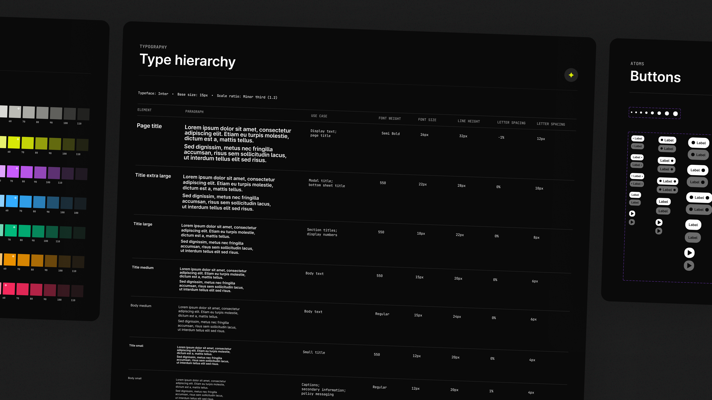

Kigs. A social way to find nights that actually feel like you.

Intro
I've spent most of my twenties in small rooms with big sound. The kind of nights where you spot a flyer on Instagram, confirm a rumour in a group chat, jump to Resident Advisor for details, then to SoundCloud to decide if the set is your thing. That pinball-machine journey is normal in underground music. It's also exhausting. With Kigs, we set out to make discovery feel like the culture actually works — social first, trust-led, music forward.
What
Early-stage social product for underground music discovery, event planning, and crew coordination.
Why
Discovery is social by nature — but the tools people use are fragmented and trust-blind.
Stage
0 → 1 MVP. Side project. Live pilot at a Toulouse launch event in October 2025.
My role
UX strategy, IA, visual design, design system — end-to-end, alongside PM and engineering.
The problem wasn't awareness. It was confidence. People had enough events — they didn't have enough signal to commit.
The problem
58 interviews. One reframe.
The brief started as "fix fragmented discovery." Research sharpened it. We interviewed 58 underground music fans across London, Toulouse, Sydney, and California, then ran a paid JTBD survey with ~200 respondents — incentivised with festival tickets to reach genuine fans rather than survey completers. A JTBD specialist helped us structure the work around intent rather than stated preference.
We weren't designing as outsiders. Ben and Lulu come from the scene as organisers in Toulouse; I've organised nights in Sicily and worked on music platforms professionally. That gave us a shortcut into the problem space, and a risk: we had to be disciplined about not just designing for ourselves.
Three things came through clearly:
Trust beats line-ups.
If a friend was going, people committed — even without recognising the artists.
Discovery is passive.
Most people weren't actively searching. If an event didn't surface through Instagram or a friend, it didn't exist.
Coordination kills momentum.
Planning moved into group chats, intent stayed fuzzy, and "maybe" quietly faded.
If my friends are going, I'll go even if I don't know the artist.
If I don't see it on Instagram, it's basically off my radar.
We shared the event on WhatsApp but I didn't really know who was coming until the night.
From objects to screens
Starting with objects, not screens.
Before touching screens, I used Object-Oriented UX to map the ecosystem — users, events, artists, venues, mixes, places. Less "requirements," more "what exists and how do these things relate?" Working through the objects and their relationships let us agree the backbone fast: what an event page must carry, how social signals travel, where music belongs, what lives on an artist page versus a promoter page.
It also surfaced scope decisions early — what the MVP needed versus what could wait. The mental model that came out of it: discovery begins with events and people, supported by music. Not the other way around.

Navigation
Getting the structure right took three goes.
Around five participants on a clickable prototype confirmed the structural calls before we committed to build. The goal wasn't polish — it was surfacing confusion fast and correcting structural issues before building.
V1
Everything unified into a home with carousels — For You, Following, Events. Search tied to Map. Looked clean; blurred intent. Users didn't know what they were looking for when they opened the app. Feed and events felt conceptually disconnected.
V2
Feeds separated from Events and Map. Better mental model match — but the home feed felt thin without events anchoring it, and the Home → Map navigation path was still unclear.
V3
Events as the entry point. Events and Map grouped — they serve the same job: deciding what to do, when, where. Search decoupled. Friend-powered signals surfaced early. The right balance.


Event as a post-like object
Treating events as social artefacts — likeable, commentable, repostable — unlocked familiar behaviours without building a heavy social network. It matches how people actually share nights: not as transactions, but as things worth telling someone about. It also made events portable across the app without engineering a separate sharing system.
A map with social proof
Progressive disclosure keeps it legible — light clusters zoomed out, attendance badges and date chips only as you zoom in. You're not just picking a venue; you're joining a night with your people. Social proof next to a music preview is what pushes someone from "maybe" to "let's go."



We also had a cold-start problem. The app only works if there's content on day one. We pulled real-world events via public APIs and partner data so it was immediately useful, and integrated SoundCloud and Spotify so artist music surfaced automatically.

Launch
Canal boat in Toulouse.
We launched in October 2025 around a live event on a canal boat in Toulouse — listed and promoted entirely inside Kigs. 150 users came in from that night. Local press picked it up; within weeks, 500+ people had requested early access. Three months in: ~1,100 registered users, all organic, no paid acquisition.
The event gave us first-hand feedback on trust signals, planning flow, and map legibility alongside early usage data to compare against prototype learnings. People prefer event-first entry; friend and promoter trust changes which events they open; a gentle planning layer is enough to move nights forward.


What I learned
The retention gap is the brief.
Day 2 says the product earns a return — people come back once. Day 7 says we haven't given them a reason to come back before something specific is happening. That gap is the clearest brief we have right now: stronger week-to-week value, better surfacing of upcoming events, social signals that work between nights — not just during them.
We also built the first version on Draftbit, hit its limits, and had to switch to Cursor mid-project. That cost us time we didn't have. On a side project where time is the scarcest resource, a platform switch is expensive in ways that don't show up in a Figma file.
I've started checking Kigs when I'm not sure what to do on a weekend. I've already found a couple of events I wouldn't have come across otherwise!
Sandra, Toulouse
What's next
Two honest bets.
Both stay true to the trust-first approach that defines the product. Both are measurable against specific behaviours, not vanity metrics.
Friend-of-friend trust.
Hypothesis: soft-exposing second-degree attendance will lift event taps and saves. Measure: event taps per session; save rate delta.
Artist-linked discovery journeys.
Hypothesis: connecting events ↔ artist pages ↔ mixes increases follow-through. Measure: artist→event click-through; mix-play-to-save rate. Reduce the app-hopping Kigs was built to solve.
The app is live, the dataset is embarrassingly small, and three engineers are already disagreeing about what to build next. Honestly, that last part is a good sign.